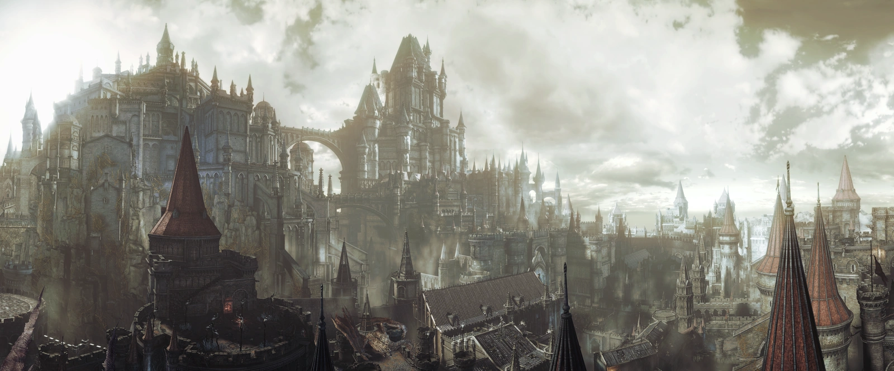
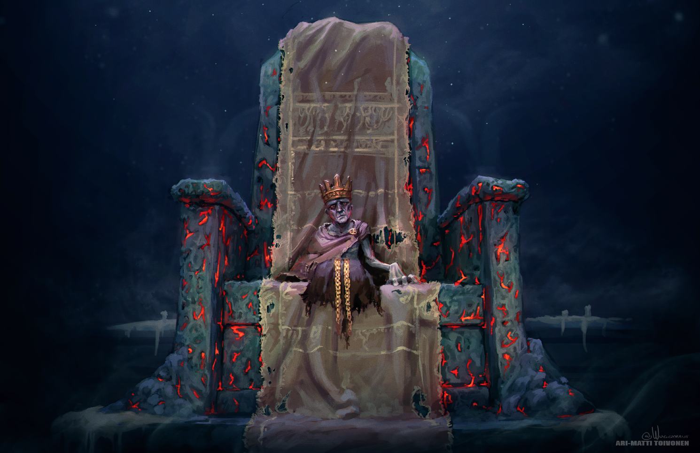

Dark Tales III
Dark Lore: La historia de Dark Souls III
Dark Souls 3 comienza en los últimos momentos del último ciclo de la Llama, con la corrupción y la locura asolando los diversos reinos del mundo. El joven príncipe Lothric era el hombre destinado a enlazar la Llama, pero se negó a cumplir con su deber. Al peligrar el enlace del fuego, la campana del Santuario de Enlace repicó para que los Señores de la Ceniza, que antaño se inmolaron en la Llama Original, se levantasen y volvieran a cumplir con su destino. Pero esta vez, los Señores también se han negado a cumplir su cometido y han abandonado sus tronos. Es entonces cuando los "Latentes" se alzan, antiguos no muertos malditos que intentaron enlazar la llama pero fallaron en el intento. El Ashen One, El Elegido de las Cenizas, The Unkindled One.
Los Señores que han abandonado su deber son Aldrich, el Santo de la Oscuridad; el señor de la Capital Profanada: Yhorm, el Gigante; La Legión de no Muertos de Farron: los Vigilantes del Abismo y el propio Príncipe Lothric. Solo queda uno en su trono, el anciano Ludleth de Courland. Todos los demás han vuelto a sus hogares natales por diversos motivos, y es la misión del Elegido de las Cenizas el ir y traerlos de vuelta, ya sea voluntariamente o no.
Los antiguos Señores de Ceniza: radiografía de quienes supieron ser
Aldrich, el Santo de la Oscuridad
Aldrich, El Santo de la Oscuridad, fue un clérigo procedente de Irithyll que, con el paso del tiempo, fue desarrollando un apetito insaciable por la carne humana. Devoró a tantos que provocó que su cuerpo se convirtiera en una especie de masa fangosa y amorfa. No solo era la carne lo que devoraba, sino también el alma, que fue lo que le hizo tan poderoso.
Tras devorar incontables almas se le encerró en la Catedral de la Oscuridad, originalmente una catedral de la Blanca Vía, para ser obligado a inmolarse en la Primera Llama y así enlazarla, "no por virtud, sino por poder." Mientras pensaba en la deteriorada llama, Aldrich llegó a la conclusión de que su sacrificio había sido estúpido, sin sentido, ya que la llama volvería a apagarse con el paso del tiempo, repitiéndose el ciclo de nuevo. Fue entonces cuando tuvo una visión en la que el mundo dejaba atrás la primera llama y era cubierto por un gran océano: la Era del Mar Profundo, libre del eterno ciclo de la llama. Esa visión hizo que se formara un gran culto detrás suyo, convirtiéndose los sacerdotes de la catedral en los Diáconos de la Oscuridad, siervos de Aldrich, los cuales le dieron el titulo de Santo de la Oscuridad. Estos se encargaron de ofrecerle sacrificios para aumentar su poder y de proteger su tumba. Además, salvaguardaban a la Catedral de los horrores de la Oscuridad, ya que si bien esta de por si no es malvada, termina por corromper lo que le rodea.
Cuando la campana repicó, pidiendo a los antiguos Señores de la Ceniza que volvieran a sacrificarse, Aldrich despertó pero rechazó cumplir con su cometido. Soñó de nuevo, esta vez con los dioses de Anor Londo, y partió hacia Irithyll. Devorándolos alcanzaría el poder necesario para hacer realidad la Era del Mar Profundo, y se libraría de sus potenciales enemigos, pues los dioses no buscan otra cosa sino enlazar la Llama. Sabia que el camino seria largo y difícil, pero no tenia miedo: devoraría a todo el que se le pusiera por delante.
Aldrich llegó a Anor Londo, ahora también con el apoyo del Pontífice Sulyvahn. Este engañó a Gwyndolin y se lo entregó a Aldrich, el cual lo devoró, ganándose el titulo de Devoradioses. Gwyndolin tenía una hermana, la Capitana de Compañía Yorshka, que fue encerrada en una torre aislada por Sulyvahn. Sin embargo, no es lo mismo devorar a un dios que a una persona normal y es por eso que el Elegido de Ceniza irrumpe en Anor Londo justo a tiempo para ver como Aldrich aún lleva una parte del cuerpo de Gwyndolin sobre él, dado que aún lo está devorando. El verdadero Aldrich es la masa amorfa debajo de Gwyndolin. Luego de derrotarlo y forzar al Señor de la Ceniza a volver a su trono, el Latente deja a Gwyndolin descansar en paz.
La Oscuridad del sueño de Aldrich y su relación con la Catedral
¿Es la Oscuridad el Abismo, o algo más? Para empezar, la Era del Mar Profundo de Aldrich no es la misma que la de Dark Souls 1 de la que hacen mención las serpientes primigenias. La Oscuridad de Aldrich no parece ser el Abismo ni nada conocido hasta el momento, sino algo que no está atado al ciclo de luz/oscuridad. Como los dragones eternos, que no eran ni luz ni oscuridad, estaban fuera del ciclo. Hay que entender la Oscuridad de ese modo. A partir de ahí, sabemos a través de diversos objetos que la Oscuridad no es perversa en si, pero que corrompe con el tiempo. Como dice la descripción del milagro Protección Profunda:
"La Oscuridad era al principio un lugar pacífico y sagrado, pero se convirtió en el descanso final de muchas cosas abominables. Esta historia de la Oscuridad ofrece protección a quienes rinden culto entre tales horrores."
Parece que los miembros de la catedral, aparte de venerar a Aldrich, se dedicaban a luchar contra los horrores de la Oscuridad. Esa era la función, por ejemplo, de los grandes caballeros que patrullaban a lo largo de la catedral. Los diáconos también luchaban contra los horrores de la Oscuridad, pero "acabaron sucumbiendo a su gran poder. Parece que ni la llama ni la fe pudieron salvarlos", y así es como fueron encontrados, en un estado corrompido pero aún así venerando a la Oscuridad y a su santo. Seguramente fueron corrompidos cuando Aldrich despertó, no pudiendo aguantar la influencia oscura que tenia. Así que, eventualmente, la Catedral cayó totalmente ante la voluntad de la Oscuridad.
Son dignos de mención también los tres archidiáconos de la Catedral, directamente debajo de Aldrich en el escalafón de poder. El archidiácono Royce, que se quedó custodiando la Catedral cuando Aldrich se fue a Anor Londo, esperando a que algún día su santo volviera; el archidiácono McDonell, que partió con el Señor de la Ceniza hacia Irithyll. Allí creo el pacto "Fiel Aldrich", los miembros del cual se encargan de proteger la entrada a Anor Londo para que nadie perturbe al santo. Sin embargo, McDonell murió allí debido a causas desconocidas. El último archidiácono es conocido como Klimt, y sirvió a Rosaria, pero que tras corromperse por Aldrich dejó de protegerla.
En conclusión, no se descarta que la Oscuridad de Aldrich no sea otra cosa que el Abismo, viendo la capacidad similar que tiene para corromper a la gente. Otra opción es que la Oscuridad fuera corrompida en algún momento por el Abismo, dando sentido entonces a la descripción del milagro mencionado anteriormente: "La Oscuridad era al principio un lugar pacífico y sagrado, pero se convirtió en el descanso final de muchas cosas abominables." Además, seria la razón por la que Aldrich se ve afectado por las espadas de Artorias y la Legión. Lo único que es seguro es que la Oscuridad existe, pues los sueños y visiones de Aldrich suelen ser bastante certeros, como hemos visto. Otro detalle interesante es que si Aldrich sueña con alguien puede imitar sus poderes. El milagro de la guadaña que usa durante la batalla está basado en Priscilla, con la cual dice que soñó mientras devoraba a Gwyndolin. También es posible que soñara con Nito.
Yhorm, el Gigante
Yhorm fue, en su día, el rey de la Capital Profanada. Tal y como dice la descripción de su alma, "es descendiente de un antiguo conquistador, pero fue su propio pueblo, antaño subyugado, quien le pidió que lo liderara con una espada pesada y un escudo duro como la piedra." El rey gigante siempre luchaba en la vanguardia, defendiendo a su pueblo, pero un día perdió a la persona que más deseaba proteger, momento en el que abandonó su escudo. El pueblo no amaba a Yhorm, probablemente debido a que descendía de un cruel conquistador y por ser diferente. Ante esto, Yhorm decidió darle a los humanos que dudaban de él el Soberano de las Tormentas, un arma con poder suficiente para matar gigantes. Tenía otro de estos espadones, el cual entregó a su buen amigo Siegward de Catarina, momento en el que le obligó a prometer que, en caso de que abandonara su deber, sería el mismo Siegward quien pondría fin a su vida.
Con el tiempo, un mal surgió en el reino de Yhorm: la Llama Profanada, una llama descontrolada que arrasaba con todo a su paso, probablemente una piromancia demasiado poderosa que se descontroló. Ante esto, Yhorm se ofreció para enlazar la Llama, con la esperanza de que la Llama Profanada desapareciese. Sin embargo, al enlazarla, esta arrasó la ciudad entera, quemando solamente carne humana. Este es el motivo por el cual la sala del trono que Yhorm ostenta en las profundidades de la Capital Profanada está llena de cadáveres fundidos. Yhorm, lleno de tristeza, sintió que le había fallado a su pueblo y al resucitar por el repicar de las campanas, se recluyó en su trono, desilusionado con la Llama y negándose a cumplir con su deber. Es entonces que Siegward, haciendo honor a la promesa que tiempo atrás le hizo a su buen amigo, se presenta para honrar su palabra.
Los Vigilantes del Abismo
Los Vigilantes del Abismo, también conocidos como la Legión de los no-muertos de Farron, fueron una organización nacida en dicho lugar que se dedicaba a luchar contra el Abismo y sus abominaciones donde quiera que estuviesen. Los guerreros de la Legión recogieron el legado de Artorias, adquiriendo su estilo de lucha y solo usando los hechizos más pragmáticos, que les fueron enseñados por uno de los dos Sabios de Cristal que se alió con ellos para entrenarles en las artes arcanas. Los Vigilantes hacían lo que fuera necesario para eliminar el Abismo haya donde apareciese, por lo cual su llegada a cualquier reino era un mal presagio.
Los Vigilantes obtenían su poder jurando sobre la sangre del Viejo Lobo de Farron, que los vinculaba el uno con el otro y les hacía inmunes al Abismo. Ese es el lobo que nos encontramos en el Torreón de Farron y el que nos permite unirnos al pacto Sabuesos de Farron. Según el espadón del exilio, los Sabuesos son guerreros exiliados encargados de mantener la paz en Farron y de velar por los guerreros caídos. Nos encontramos con dos de ellos antes de entrar por primera vez en Farron. Cuando los Vigilantes del Abismo se sacrificaron para enlazar la llama, "la sangre del lobo se secó", deshaciendo su inmunidad al Abismo y corrompiendo todo Farron con un bosque putrefacto, transformando a sus aliados y sirvientes en las bestias que asolan el camino. Al ser resucitados y ver lo que había pasado con su reino, los Vigilantes montaron en cólera y se negaron a volver a enlazar la Llama. Además, la corrupción del Abismo llegó a sus mismas filas, seguramente debido a Wolnir y las Catacumbas de Carthus, que hacían frontera directa con su reino. Muchos miembros de la Legión fueron corrompidos por el Abismo, pues ya no tenían la protección de la sangre del lobo y los Vigilantes se enfrascaron en una lucha eterna contra sus propios compañeros; sus almas estaban todas concentradas en una por su antiguo pacto, y cuando uno moría, el grupo absorbía el alma, resucitando a otro compañero. Cuando matamos al último Vigilante, las almas de todos los Vigilantes se manifiestan en un solo cuerpo, en sintonía, como fue en el pasado, ahora con un único objetivo: eliminar a cualquier intruso que asalte sus puertas y quiere acabar con ellos. Solo cuando el Elegido de Ceniza es quien derrota a los Vigilantes es cuando ciclo se rompe, absorviendo el mismo su alma y ponendo fin al eterno conflicto.
La formación de los Vigilantes del Abismo es un misterio. Hay quien dice que la organización fue fundada por Ciaran, una de los cuatro caballeros de Gwyn y amante de Artorias. Es posible que en la línea temporal donde Artorias perece Ciaran, destrozada por su muerte, fundara la Legión para que nadie volviera a sufrir por la corrupción del Abismo. Combinando el alma de Artorias con la del viejo lobo de Farron para que así, cuando algún guerrero se uniese a sus filas, obtuviese parte de su poder, razón por la cual el Espadón de Artorias es un arma fuertemente vinculada a los Vigilantes del Abismo. Dicha teoría se ampara a su vez en que los Vigilantes ostentaban conocimiento del estilo de lucha de Artorias, ya que Ciaran lo conocía y se los habría enseñado. También explicaría que los Vigilantes usaran una daga en vez de un escudo en la mano izquierda, ya que Ciaran era experta en dagas, y seguramente combinó su estilo con el de Artorias para ser aún más mortal.
Por último, la teoría explica por que hay caballeros negros en las Tumbas Olvidadas. Ciaran llevó el cadáver de Artorias allí y lo enterró, y le pidió a los caballeros negros que guardasen su tumba, ya que ella era de las pocas personas vivas que aún tenia poder sobre ellos. En esta zona también se puede encontrar el anillo de Ciaran, solidificando aún más la teoría de que ella esté enterrada junto a Artorias.
Como último detalle, es muy posible que Farron este situado donde el antiguo reino de Oolacile, el reino donde nació el Abismo y en el cual Artorias murió. Los enemigos que se encuentran en la zona son muy parecidos a los habitantes corrompidos de Oolacile y es donde se encuentra esparcidos los atuendos de la Princesa del Anochecer.
El jóven Príncipe, Lothric

"Ah, Latente, el fuego se apaga, y espera su último Señor. El Príncipe Lothric está en tus manos... Por favor, salva su alma. Dile lo que debe ser. Un señor..."
La historia dice que, después de derrotar a Aldrich, Yhorm y a los Vigilantes del Abismo, el Latente debe enfrentar al último Señor de la Ceniza y para eso es transportado al Castillo de Lothric por la Suma Sacerdotisa Emma quien, antes de morir, le ruega que llegue hasta el príncipe Lothric y haga todo lo posible para que asuma el papel de Señor, del cual ha renegado. El fuego se está apagando, tal y como se puede observar en el cielo, así que hay que darse prisa.
Príncipe Lothric no era aún un Señor de la Ceniza como creen muchos, era el hombre que debía enlazar la llama en este ciclo, pero las enseñanzas del primer erudito, que trabajaba en el Gran Archivo, le hicieron dudar de la Llama y de su eterno ciclo auto-destructivo, así que llegado el momento, se retiró al lugar más alto del Castillo de Lothric, desde donde vería los últimos momentos de la desvaneciente Era del Fuego. Este hecho fue el que obligó a tocar la campana para que los Señores de la Ceniza antiguos volvieran a despertar y enlazaran la Llama de nuevo: con uno no bastaría debido a que ya se incineraron una vez, pero con el esfuerzo conjunto de todos bastaría para volver a enlazarla. Pero como ya se ha hablado, los Señores de la Ceniza tenían sus motivos para no querer enlazar de nuevo la Llama, hecho que derivó en la forzada intervención de los Latentes. Solo hubo un Señor que no rechazó cumplir su deber, Ludleth de Courland, quien permaneció en su trono a la espera del Ritual del Enlace.
La dinastía de Lothric siempre había estado obsesionada con crear un campeón que enlazase el fuego, y el Rey Oceiros tenia todas sus esperanzas puestas en su futuro hijo, Lothric. Sin embargo, Lothric nació débil y enfermizo, maldito, pero aún con eso fue querido por el reino y por su familia, quienes querían que enlazara el fuego a toda costa. Lothric tenia un hermano mayor, Lorian, el cual era de los mejores caballeros de Lothric. En algún momento, Lorian asumió la maldición de su hermano, en un intento de ayudar a Lothric a enlazar el fuego, ya que él solo no podría debido a su débil estado. La maldición dejó a Lorian mudo y lisiado, sin poder mover las piernas. Según se describe en su armadura, parece que no fue obligado a hacerlo, sino que lo hizo voluntariamente. El hecho de compartir la maldición los hizo prácticamente inseparables, reflejado en como se desarrolla la batalla (Lorian no puede morir mientras Lothric esté vivo). Si Lothric hubiera accedido a enlazar la Llama, seguramente Lorian hubiera tenido que hacerlo junto a él, ya se ha visto que no tiene que ser necesariamente una sola persona quien enlace el fuego, como ocurrió en el caso de los Vigilantes del Abismo.
El Reino de Lothric, la Familia Real y la Fe Angelical
Lothric era un antiguo reino que aún en la actualidad era próspero, incluso diría que más que nunca, y en el reinaba el rey Oceiros. El poder real se sustentaba sobre tres pilares: los caballeros, encargados de la defensa del reino y a los que se les permitía criar dragones, los cuales solían defender la entrada al castillo. El segundo pilar era la Suma Sacerdotisa, encargada de cuidar a los príncipes. Su nombre era Emma, la misma que ayuda en varias ocasiones al Elegido de Ceniza a avanzar en su cruzada. El último pilar era el primer erudito, el miembro de más alto rango del Gran Archivo. Pero había un cuarto pilar en la sombra: los Cazadores de la Mano Negra. Estos se dedicaban a castigar a los enemigos del reino de formas que los Tres Pilares no podían conseguir. Para ser uno de ellos había que haber servido a diversos reyes, y en toda la historia solo han existido tres.
También se considera que había un quinto pilar, la Fe Angelical de Gertrude. Gertrude era la doncella sagrada de Gwynevere, quizás su hija, no está claro. Un día fue visitada por un ángel, y debido a esto perdió la voz y la vista, pero escribió los conocimientos que había adquirido y creó la Fe Angelical de Lothric. Esta Fe no fue aceptada por los Tres Pilares y empezó una guerra civil en Lothric. La propia Gertrude fue secuestrada y encarcelada por los eruditos en el Gran Archivo para experimentar con ella y desarrollar un objeto para lanzar tanto milagros como hechizos, cosa considerada como un pecado y que hizo que se les considerara herejes. Más tarde, el Gran Archivo cerró sus puertas para proteger sus conocimientos del "Pus del Hombre", que había aparecido en Lothric y parecía ser una clase de corrupción del Abismo.
En ningún momento se especifica en que cree la Fe Angelical, pero todo apunta a un rechazo a la Llama. Primero, los Tres Pilares no tendrían porque rechazarla si no hubiera sido así, y segundo, la habitación de Lothric estaba llena de plumas, como la jaula de Gertrude, y los milagros que lanza el joven príncipe dejan un rastro similar a plumas, señal de que provienen de la Fe Angelical. Posiblemente el príncipe Lothric no solo fuera influenciado por el primer erudito, sino también por esa nueva fe. Si esta estuviera a favor del enlazamiento de la Llama, Lothric no usaría milagros relacionados con ella.
En los más alto del Gran Archivo se encuentra la jaula donde mantuvieron encerrada a Gertrude, junto a un cadáver y un milagro, lo que hace creer que murió allí. Sin embargo, la jaula se encuentra abierta y lo más importante, cerca se encuentran merodeando seres amorfos que también suelen rondar las cámaras de Rosaria en la Catedral de la Oscuridad. Se sabe que Rosaria es muda, y está muy débil. Es muy posible que Rosaria sea Gertrude, pero lo que no se entiende es por qué fue a la Catedral de la Oscuridad cuando allí no sería muy bien recibida. Las puertas de sus aposentos están claramente forzadas, quizás por Aldrich cuando este despertó, pero Rosaria está a salvo. Quizás el el aura angelical que protegía la sala fue demasiado para el Devorador de Dioses, obligándolo a retroceder. La relación Rosaria-Gertrude es muy nebulosa: si la Fe Angelical se mostrara a favor de la Llama se entendería la relación con la Catedral de la Oscuridad, ya que antes esta era una Catedral dedicada a la Blanca Vía, religión que sí está a favor de la Llama. Rosaria tendría al archidiacono Klimt ayudándola, pero al ser corrompido por el recién despertado Aldrich, la abandonó. Aún así todo esto es solo una teoría, quizá Rosaria no tiene nada que ver con Gertrude y ésta murió en su jaula.
Ahora hablemos un poco del rey. El Rey Oceiros estaba obsesionado con crear un heredero apto para enlazar la llama y su hijo Lorian, incluso con lo poderoso que era, no bastaba. Por eso le mandó derrotar al príncipe demonio, que apuntaba a ser el dios del fuego Flann, para casarse con su esposa, la diosa Gwynevere, que había dejado Anor Londo hacía ya mucho tiempo. Pensó que el hijo de una diosa seria el candidato perfecto para enlazar la llama, pero no fue así. El niño nació maldito, seguramente por el hecho de haber mezclado la sangre de un humano con la de una diosa. Oceiros se arriesgó y tuvo un tercer hjio, llamado Ocelotte, pero este debió ser aún peor que Lothric porque hizo que Gwynevere se fuera sin dejar rastro.
En este punto Oceiros empezó a perder la cordura y se alió con los herejes del Gran Archivo para encontrar una solución al problema del heredero. Allí descubrió el culto a Seath el Descamado y se obsesionó con los dragones: creía que en ellos estaba el verdadero poder para enlazar la Llama. Su obsesión llegó hasta tal nivel que busco la forma de transformarse en un dragón, cosa que consiguió, pero era como Seath: ciego y sin escamas.
Se enviaron muchos asesinos para acabar con quien ahora llamaban El Rey Consumido, pero siempre fallaban. Oceiros atribuía su resistencia a la protección divina de su anillo de escama de dragón. Prueba de la locura de Oceiros es que éste está convencido de que aún carga a Ocelotte entre sus brazos, llamándolo hijo de dragones y durante la batalla que el Latente libra contra el Rey, se puede oír el llanto de un bebé. Probablemente sea el mismo Oceiros haciendo esos sonidos, en su locura. Hay quienes dicen que Ocelotte nació muerto y Gwynevere, al ver que Lothric se negaba a enlazar la Llama y que su marido se había vuelto loco, mas el hecho de dar a luz a un niño muerto, hizo lo mismo que en Anor Londo: desapareció.
Ludleth de Courland
El único Señor al que el Latente no tuvo que enfrentarse, Ludleth de Courland, también conocido como El Exiliado, fue el único Señor de la Ceniza que al resucitar permaneció en su trono, esperando para cumplir su deber de nuevo. Es el único Señor de la Ceniza que no entrega un alma al morir, solo un anillo que reza "Una de las maravillas transpuestas de Courland. Deriva del alma de un Devorador de Almas. El Devorador de Almas era una bestia que absorbía almas para alimentar su propio poder. Se dice que incluso después de que su cadáver maldito fuera calcinado, el hedor de las almas siguió mancillando el aire de forma permanente.. Se cree que el Devorador de Almas que menciona el anillo es el mismo Ludleth y que fue por este mismo motivo que fue exiliado. Es un personaje bastante enigmático, del cual no existen muchas referencias (al igual que de Courland), pero intentaremos hablar de él con la mayor profundidad posible.
Presuntamente, Ludleth fue calcinado en la Primera Llama y quizás fuera obligado a hacerlo como en su momento lo fue Aldrich. En su trono del Santuario del Enlace, se encuentra sin piernas y con la parte baja del torso ligeramente calcinada, pero tampoco se descarta que le fueran arrancadas para dejarle inmóvil y así poder arrojarlo a la Llama. El anillo lo describe como una bestia, así que es posible que no quisiera sacrificarse voluntariamente.
Otra teoría es que él no fuera quien tuviera que enlazar la Llama al principio, sino que fuera otro y que él simplemente fuera un compañero suyo que se dedicaba a transponer las almas que él conseguía. A fin de cuentas, algo que se sabe de Ludleth es que fue un estudiante del arte de la transposición, arte que fue prohibido en Courland, donde destruyeron todos los hornos de transposición (hornos que permitían convertir almas en armas), artefacto sin el cual no se puede concebir esta técnica. Sin embargo, parece que algunos hornos sobrevivieron y uno de ellos se obtiene al derrotar al Gran Árbol Corrompido, un antiguo árbol espiritual que se usaba para arrojar y sellar objetos corruptos y maldiciones en el Asentamiento de No-Muertos, pues un lugar donde viven seres malditos es proclive a ser afectado por maldiciones. Esto señala un poco la naturaleza que tenía el horno.
Continuando esta teoría, Ludleth sería expulsado de Courland por estudiar el arte de la transposición y en su exilio, conocería al no-muerto elegido de su generación, al cual ayudaría en su camino transponiendo las almas de los Señores. No obstante, al llegar el momento de enlazar el fuego, el elegido se negó. Sabemos que Ludleth conoce lo que pasa si la Guardiana del Fuego recupera sus ojos, "las visiones de traición", por lo que puede que el elegido simpatizara con esas ideas y se negara a enlazar la Llama. Ludleth, ante esto, de alguna manera traicionaría y mataría al elegido y absorbería su alma, o bien la transpondría en un objeto que le ayudara a enlazar la Llama. En cualquiera de estos dos casos, ocuparía el lugar de su elegido y se sacrificaría para que el ciclo continuase. El Devorador de Almas mencionado en el anillo sería el elegido, y Ludleth hubiera transpuesto su alma en ese mismo anillo. El título de Devorador de Almas le sienta bien al Elegido, ya que lo que hace es devorar las almas de los Grandes Señores para ser más poderoso. El trono de Ludleth es demasiado grande para él, como podemos ver, así que quizás eso significa que estaba pensado para otra persona en un principio.
Una tercer teoría sobre Ludleth es que éste ganó un gran poder mediante la transposición de almas y eso lo llevó a aceptar ser quien enlazara la Llama, aunque no sin miedo y reservas. A veces, en las ocasiones en que se encuentra dormido, se lo puede escuchar en el Santuario del Enlace gritando entre pesadillas, sufriendo de una profunda agonía, probablemente un recuerdo que aún lo acecha del momento en el que enlazó la Llama.
Sin lugar a dudas, uno de los personajes más nebulosos del universo de Dark Souls y del cual no hay una teoría que pueda afirmarse ni remotamente correcta.
Actores necesarios: Co-protagonistas del Caos
Pontífice Sulyvahn
El Pontífice Sulyvahn fue un hechicero de Irithyll que de joven descubrió la Capital Profanada junto a la Llama Profanada, la cual creó una ambición irresistible en su interior. No se especifica, pero la creencia es que consiste en cambiar la Llama Original por la Llama Profanada, que es eterna o, al menos, terminar con el ciclo de la Llama. De ese lugar también sacó su Espadón Profanado, que representaba la Llama Profanada y acogió a algunos supervivientes del cataclismo, dejándolos de carceleros en los Calabozos de Irithyll. No sé sabe por qué la Llama Profanada incitó a Sulyvahn a evitar el enlace de la Llama, pero sus actos dejan claro que eso es lo que intentaba. Quizás vio algo de grandeza y eternidad en la Llama Profanada y la vio apta para substituir a la Llama Original.
Más tarde fue a Lothric y se convirtió en el primer erudito, maestro del Gran Archivo y tutor del príncipe Lothric durante su infancia. Este hecho fue clave, pues fue él el erudito que hizo dudar a Lothric del ciclo de la Llama, lo que más tarde hizo que decidiera renunciar a enlazarla, provocando por consiguiente la resurrección de los demás Señores de la Ceniza. Algunos creen que el erudito que hizo eso no fue Sulyvahn sino Aldia (erudito estudioso del Pecado Original en una previa Era de la Llama), pero ésta teoría carece de pruebas y fundamentos firmes para ser considerada.
Después de introducir la semilla de la duda en el príncipe, Sulyvahn abandonó Lothric y volvió a Irithyll para seguir ganando poder. Cuando Aldrich llegó, Sulyvahn se ofreció a ayudarle en su cometido, ya que los dioses pretendían seguir enlazando el fuego, mientras que Aldrich y Sulyvahn no. No sé sabe exactamente si Sulyvahn compartía la visión de su ahora aliado acerca de la Era del Mar Profundo, es probable que sí. En cualquier caso, Sulyvahn subió él solo a Anor Londo, no quería luchar directamente contra los dioses y sus caballeros plateados porque podría perder. Lo que hizo fue ir en son de paz y entregarle un regalo a Gwyndolin: la Lanza de Yorshka. Esta lanza, según dice su descripción, tenia un conjuro aletargante y fue por eso que el dios se debilitó, "cayendo enfermo", como dice su hermana Yorshka. Cuando estuvo lo suficientemente débil, Sulyvahn encerró a Gwyndolin en la catedral para entregárselo a Aldrich y encerró a Yorshka en la torre de una iglesia, aislándola.
Fue entonces cuando se auto-proclamó Pontífice, como si asumiera el mando de los caballeros de la Luna Oscura, aunque en realidad no fuera así. Como dice en su otra espada, el Espadón del Juicio, "representaba el juicio de la Luna, pero su tono, más oscuro que el de la luna más oscura, reflejaba su verdadera naturaleza." Reunió un ejército de caballeros, los Caballeros del Valle Boreal, comandados por unas brujas a las que llamó Caballeros Sagrados, que llevaban en sus bastones el poder de la Llama Profanada. La Llama Profanada acabó consumiéndolas, convirtiéndolas en cascarones huecos.
El ahora Pontífice Sulyvahn también envió a diversos caballeros a lugares distantes, enemigos políticos que quería mantener lejos. Les entregó a cada uno un anillo "con un ojo" suyo, que con el tiempo les convertía en bestias enloquecidas solo aptas para el combate. La Bailarina del Valle Boreal, el Vordt, y los distintos Caballeros Precursores son algunos de estos caballeros. Los envió a sitios clave, como Lothric, para evitar que nadie accediera al castillo y pudiera ir a por el príncipe. Su misión principal era la de evitar el paso del los Latentes y de todo aquel que quiera llegar a Irithyll.
El Gran Señor Wolnir
Hace mucho tiempo, existió un reino llamado Carthus, que contaba con valientes luchadores entrenados con piromancias bastante inusuales, debido a que sus piromantes no tenían contacto con otros más allá de su reino. Parece ser que Carthus tenia diversos señores, "hasta que Wolnir les obligó a arrodillarse y aplastó sus coronas. Entonces, las coronas se hicieron una y Wolnir se convirtió en el Gran Señor." Wolnir, un gigante, era un ser con grandes ansias de poder que logró gobernar al pueblo de Carthus tras derrotar a todos sus señores y según registros, era un señor muy cruel, pues sentenció a a muchas almas de formas espantosas. Incluso en el trono, Wolnir buscaba ser cada vez más poderoso y empezó a investigar magias cada vez más oscuras, hasta que cayó en el Abismo. Esa fue la primera vez en la que Wolnir tuvo miedo, y rogó a los dioses para que le salvaran. De ese modo obtuvo la espada sagrada y los tres brazaletes sagrados que ostenta en sus muñecas, los cuales le aliviaron en cierta manera. En el Abismo, Wolnir descubrió las magias oscuras que plagan las Catacumbas, pero era peligroso, pues el Abismo aún seguía reclamando el alma de Wolnir.
Estos brazaletes son lo único que mantiene unido a Wolnir con el mundo de los vivos y cada vez que un brazalete es destruido, la influencia del Abismo jala más y más de Wolnir, arrastrándolo como si quisiera tragárselo. Al romperse el último brazalete, Wolnir será arrastrado para siempre al Abismo, como debió pasar hace mucho tiempo. La única duda al respecto es si el Wolnir que se manifiesta en el mundo de los vivos es el verdadero o es solo una reminiscencia de su poder anclada al cáliz calavera que transporta al Latente a su presencia. Una teoría es que la calavera del cáliz fuera la calavera de Wolnir, y la bestia a la que se enfrenta el Elegido sea la representación de lo que fue en vida, pero que fue un humano como cualquier otro.
Se teoriza que Wolnir es el padre de Yhorm, o por lo menos un ancestro suyo y que por lo tanto la Capital Profanada fue antiguamente Carthus. Toma fuerza esta teoría ya que, al obtener el Latente el alma de Yhorm, ésta lo describe como "es descendiente de un antiguo conquistador, pero fue su propio pueblo, antaño subyugado, quien le pidió que lo liderara." Ese conquistador sería Wolnir y ésta sería la explicación al miedo que sentían los súbditos de Yhorm hacia él: la reputación de su línea de sangre. Se hace hincapié que en Carthus eran muy hábiles con las piromancias y la Capital Profanada fue arrasada por una piromancia... Además, las Catacumbas de Carthus y la Capital Profanada están geográficamente muy cerca. Lo más probable es que Wolnir sí sea el ancestro de Yhorm, lo que descarta la teoría de que Wolnir fuera humano. Solo quedaría saber entonces que es exactamente el cáliz que lleva al Campeón de Ceniza a luchar contra el Gran Señor. Quizás el Abismo lo recluyó ahí a pesar de su protección sagrada, pero no logró engullirlo por completo... aún.
El Campeón Gundyr
El Campeón Gundyr fue en sus tiempos un No-Muerto Elegido, el que debía enlazar la llama, pero así como detalla su historia: "Una vez, un campeón llegó tarde a las festividades y se le recibió con un Santuario sin fuego y una campana que no tañía." Parece ser que para cuando Gundyr llegó al Santuario del Enlace, la Guardiana del Fuego había muerto y la Llama se había apagado, fallando en su misión.
La primera vez que el Latente se encuentra con Gundyr es en forma de Iudex Gundyr, para encontrarlo nuevamente en las Tumbas Olvidadas, como el Campeón Gundyr. Esto es debido a que las Tumbas Olvidadas están situadas en el pasado, en el momento en que Gundyr llegó tarde a la Llama. El espacio y el tiempo se encuentran distorsionados debido a la inestabilidad de la Llama, así que eso hace que se pueda acceder a una versión versión del Santuario del pasado. La armadura de Gundyr lleva tallada que un guerrero desconocido lo venció y provocó que se convirtiera en la vaina de la espada en espiral de la Hoguera, esperando al siguiente hombre que tuviera que enlazar la Llama para comprobar que fuera digno. Ese guerrero desconocido es el Elegido de Ceniza. Más tarde pasó a llamarse Iudex Gundyr (Iudex significa "juez" en latín).
Se corrobora el relato de que las Tumbas Olvidadas se encuentran situadas en un tiempo pasado ya que, cuando el Latente derrota al Campeón Gundyr obtiene su alma, cosa que no ocurre cuando derrota a Iudex Gundyr. Esto significaría que Iudex Gundyr no tiene ningún alma que ofrecer, dado que ya le fue arrebatada en el pasado. Este hecho también explica por qué Iudex Gundyr fue corrompido por el "Pus del Hombre", que ya fue mencionado antes, proviene del Abismo y un ser sin alma es más propenso a ser corrompido. Otro indicio es que las Tumbas Olvidadas del pasado son custodiadas por la presencia de varios Caballeros Negros, de los cuales no queda rastro en las Tumbas del presente, ya que fueron eliminados por el Elegido en el pasado.
El Rey Sin Nombre
En el Pico del Archidragón, uno de los lugares más antiguos de adoración a los dragones (probablemente de los pocos que aún existe), en punto más alto, el simple tañer de una campana llamará a uno de los personajes más temidos y respetados de Dark Souls III: el Rey Sin Nombre junto a su fiel dragón, el Rey de la Tormenta. ¿Quién es el Rey Sin Nombre? Nada más ni nada menos que el primogénito de Gwyn, creador de la Llama y primer Señor de la Ceniza, el cual fuera exiliado para siempre por su padre al forjar una fuerte amistad con el enemigo más grande de los primeros Señores: un dragón.
El Rey Sin Nombre era adorado como un dios de la guerra debido a su poder y a su papel en la batalla contra los dragones eternos, en la cual participó liderando a los asesinos caza-dragones. Incluso Ornstein, el más famoso cazador de dragones, se inspiró en el estilo de lucha del hijo de Gwyn, pues él fue su primer caballero.Como ya se mencionó antes, en algún punto de su vida el Rey Sin Nombre creó un gran lazo de amistad con un dragón, y se hicieron compañeros inseparables. Esto debió ser un gran insulto para Gwyn, pues los dragones habían sido su gran enemigo desde siempre y le valió el ser exiliado y también su nombre, borrado de los registros de la historia. Sin embargo, eso no significa que dejara de ser adorado, pues parece ser que él es la figura líder del pacto "Caballeros de la Luz Solar", uno de los tantos aquelarres que existen en Dark Souls.
Ornstein, el cazador de dragones legendario, era uno de los dos guardianes de la mítica capital de Anor Londo, junto con su compañero Smough el Ejecutor. Se dice de Ornstein que fue el último ser vivo en abandonar Anor Londo y que su motivación fue el llegar a lo más alto del Pico del Archidragón para enfrentarse al Rey Sin Nombre, matarlo y así limpiar el nombre de todos los cazadores de dragones, faena la cual todo indica que fue infructuosa, ya que en el Pico se encuentran dispersas tanto la armadura como la lanza de Ornstein. Esto casi garantiza que, al enfrentarse al Rey Sin Nombre, el asesino de dragones no solo perdió la batalla, sino también la vida.
El Alma de Ceniza

Una vez derrotados los cuatro Señores de Ceniza renegados, el Latente regresa al Santuario del Enlace, donde cumple con su misión de devolver a los Señores a sus tronos. La Guardiana de Fuego, haciendo uso del vestigio de poder aún contenido en las almas retornadas, confiere al Campeón su fuerza y lo transporta al Horno de la Primera Llama, donde éste debe cumplir el deber de todo Señor: Enlazar la Llama y continuar el ciclo de la luz.
En el Horno de la Primera Llama, el Latente se enfrenta a la prueba definitiva en la forma del Alma de Ceniza. Ésta es la manifestación de todos aquellos Señores que alguna vez enlazaran la Llama, como Gwyn y todos aquellos No-Muertos Elegidos que le precedieron. El Alma de Ceniza cambia de estilo de combate durante toda la batalla, representando a cada uno de los Señores de la Llama en el mismo. Por último, adopta el poder y el estilo de Gwyn, como el broche de oro de un final ya anunciado.
Hay dos motivos por los que el Alma de Ceniza se enfrenta al Campeón de Ceniza: para comprobar si éste es digno de enlazar la Llama yconvertirse en un verdadero Señor de la Ceniza y en parte, por miedo. El Alma no conoce realmente las intenciones del Latente, si realmente planea cumplir con su propósito y continuar con la Era de la Llama, o si lo que pretende es apagarla y comenzar con la Era de la Oscuridad..
La Iglesia Azabache de Londor

Pero primero, es imposible cerrar esta historia sin hacer mención a Londor y su Iglesia Azabache. Londor, el Reino de los Huecos, es un reino lejano donde los Huecos establecieron una comunidad. Aquellos afectados por la maldición de los no-muertos son repudiados, desterrados y perseguidos, por lo tanto, es comprensible que todos estos apestados se agruparan en un solo lugar, libres de cualquier persecución. Este lugar parece estar controlado por la Iglesia Azabache de Londor, la cual es mencionada durante toda la historia.
La Iglesia Azabache fue fundada por Yuria y sus dos hermanas. Éstas eran expertas en esgrima y fundaron la iglesia sin ayuda de nadie. La hermana más pequeña, Liliane, era quien recitaba el Tomo divino de Londor en braille, contando historias que reflejaban el sufrimiento y el conflicto de los Huecos. Poco más se sabe de ella, pero es probable que fuera ciega, debido a que leía un tomo en braille. La hermana del medio era Yuria, quien sobresalía como espadachina entre las demás y con su espada segó varios cientos de vidas. De la hermana mayor no hay conocimiento alguno, ni siquiera su nombre.
Las hermanas servían a una serpiente primigenia que, al tener en cuenta que la Iglesia Azabache buscaba a un "Señor de los Huecos", se puede asumir que esta serpiente era Kaathe. Kaathe es el fundador y líder de los Espectros Oscuros y su objetivo principal es traer la Edad de la Oscuridad. Pregona que no se debe renovar la Edad de Fuego y enlazar la Primera Llama, sino que el Elegido de Ceniza es en realidad descendiente de aquel que poseía el Alma Oscura (Dark Soul) y que éste es responsable de traer la Edad Oscura y reinar como su Señor. Ésto se confirma con la muerte de Yuria, que susurra con su última aliento "Kaathe, te he fallado..:".
Las tres hermanas enviaron a cientos de peregrinos hacia Lothric, pues sabían de la obsesión de la familia real de crear un heredero digno y eso no les interesa a los miembros de la Iglesia Azabache. Muchos murieron por el camino, como se puede observar en el acceso al Asentamiento de los No Muertos, donde hordas de cadáveres de dichos peregrinos se encuentran esparcidos por el puente. Otros consiguieron llegar al Gran Muro de Lothric, y empezaron un extraño proceso a través del cual se convirtieron en extrañas mariposas peregrinas que se pueden observar mientras se asciende por el Castillo de Lothric. Cuando llegan a la cumbre del castillo, estas mariposas se dedican a dar vueltas alrededor de la sala donde reside el príncipe Lothric, vigilando que en ningún momento cambie de opinión e intente enlazar la Llama.
Estas mismas mariposas se encargan de controlar mediante algún tipo de energía a la armadura del viejo Asesino de Dragones, quien vigila la entrada al Gran Archivo para impedir el paso del Campeón de la Ceniza y así evitar que pueda progresar en su misión de enlazar la Primera Llama. Es simplemente la armadura hueca del primer Asesino de Dragones, sin dueño, pero controlada por el poder de las mariposas peregrinas.
El Latente tiene un primer contacto con la Iglesia Azabache al arribar en el Asentamiento de los No Muertos, donde conoce a Yoel de Londor, un peregrino que ha fallado en su misión de llegar a Lothric, pero que no ha muerto junto con sus compañeros. Éste encuentra un nuevo propósito en ayudar al nuevo Elegido y tratar de convercerlo de no enlazar el fuego, por lo que le promete poder inconmensurable a cambio de imbuirlo con la "marca oscura". Dicha marca oscura es el símbolo de los Huecos, con la cual busca comenzar el proceso de moldear al Elegido de Ceniza en el antes mencionado Señor de los Huecos. Y esto nos lleva al final de esta historia.
Dark Final: No toda la historia está escrita
En la línea temporal de Dark Souls, el final no está escrito y todo depende de la decisión final del Elegido de Ceniza con respecto al Enlace de la Primera Llama.
El Enlace de la Llama
El escenario normal sería que el Elegido enlace la Llama y perpetúe una vez más la Edad de Fuego, extendiendo su ciclo. En este caso, la Llama se encuentra tan débil que, aún cuando intente consumirlo, solo logrará incinerarlo un poco, lo suficiente para reavivarse y sobrevivir.
El Fin del Fuego
El Fin del Fuego en la línea temporal de Dark Souls es una posibilidad que se da si la Guardiana de Fuego recupera la visión. Esto ocurre cuando el Latente recoge en su viaje a las Tumbas Olvidadas los ojos perdidos de Guardiana de Fuego que se encuentran dentro del Santuario de Enlace sin llama. Al recuperar su vista, la Guardiana sufre las antes mencionadas "visiones de traición", donde se le revelan imágenes del fin de la Era de la Llama que dan paso a un mundo sin la misma, el comienzo de la Era de la Oscuridad. Ella le pregunta al Latente si su deseo es un mundo sin llama y si la respuesta es afirmativa, una vez derrotada el Alma de Ceniza éste invoca a la Guardiana de Fuego, quien absorbe lo que queda de la Llama dentro de su pecho, a la vez que dice que "algún día, pequeñas llamas bailarán por toda la Oscuridad, como ascuas, enlazadas por los Señores del pasado".
La Usurpación de la Llama

El último escenario posible está ligado con Londor, la Iglesia Azabache y la nueva misión de Yoel. Aquí, el destino del Latente es usurpar la Llama y convertirse en el Señor de los Huecos, conduciendo a la humanidad hacia una nueva era. Aquí es clave el papel desempañado por Yoel primero y luego Yuria, de quien ya se ha hecho mención, encargados de guiar al Campeón de la Ceniza en su camino por convertirse en el Señor de los Huecos. Su propósito es hacer crecer la Marca Oscura dentro del Latente a un nivel tal que sea capaz de inclusive absorber el poder de la Primera Llama para si mismo.
Así es que, una vez que el Latente derrota al Alma de Ceniza, absorve la Llama con su Señal Oscura tomando el poder como suyo, rompiendo el ciclo eterno que antaño Gwyn había establecido como la normal absoluta y liberando a la humanidad de la opresión de los diosas, con los huecos como la verdadera forma de la humanidad y el Elegido como su líder.
 ↑
↑